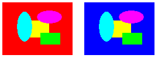

Практическое руководство. Использование таблицы перераспределения цветов
Преобразование — это процесс преобразования цветов в изображении в соответствии с таблицей сопоставления цветов. Таблицы преобразования цветов представляет собой массив ColorMap объектов. Каждый ColorMap объект в массиве имеет OldColor свойство и NewColor свойство.
Когда GDI+ рисовании изображения каждого пикселя изображения с помощью сравнивается с массив старых цветов. Если цвет пикселя совпадает со старым цветом, его цвет изменяется на соответствующий новый цвет. Цвета изменяются только для подготовки к просмотру — значения цвета самого изображения (хранящиеся в Image или Bitmap объекта), не изменяются.
Чтобы нарисовать пересопоставленный изображение, инициализируйте массив ColorMap объектов. Передайте массив SetRemapTable метод ImageAttributes , а затем передать ImageAttributes объект DrawImage метод Graphics объекта.
Пример
В следующем примере создается Image объекта из файла RemapInput.bmp. Код создает таблицу преобразования цветов, состоящий из одного ColorMap объекта. OldColor Свойство ColorRemap объекта отображается красным цветом, а NewColor свойство имеет значение blue. Изображение будет рисоваться один раз без изменения сопоставления и один раз с повторное сопоставление. В процессе преобразования все Красные пиксели на синий.
Ниже показан исходное изображение в левой части и преобразованное изображение справа.

Image image = new Bitmap("RemapInput.bmp");
ImageAttributes imageAttributes = new ImageAttributes();
int width = image.Width;
int height = image.Height;
ColorMap colorMap = new ColorMap();
colorMap.OldColor = Color.FromArgb(255, 255, 0, 0); // opaque red
colorMap.NewColor = Color.FromArgb(255, 0, 0, 255); // opaque blue
ColorMap[] remapTable = { colorMap };
imageAttributes.SetRemapTable(remapTable, ColorAdjustType.Bitmap);
e.Graphics.DrawImage(image, 10, 10, width, height);
e.Graphics.DrawImage(
image,
new Rectangle(150, 10, width, height), // destination rectangle
0, 0, // upper-left corner of source rectangle
width, // width of source rectangle
height, // height of source rectangle
GraphicsUnit.Pixel,
imageAttributes);
Warning
It looks like the sample you are looking for does not exist.
Компиляция кода
Предыдущий пример предназначен для работы с Windows Forms и требует PaintEventArgse, который является параметром Paint обработчик событий.